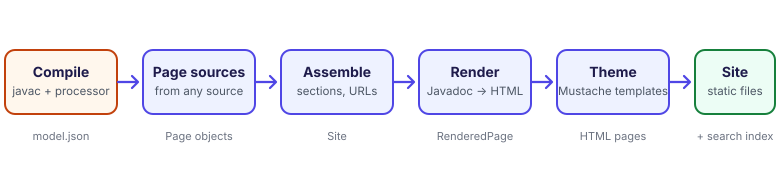

How it works
The pipeline from Javadoc to static site, and why it is built this way.

Doctize is a pipeline of small, separate steps. Knowing them helps when something does not come out as you expected, and shows where to plug in your own code.
1. Compile: the annotation processor#
DocProcessor runs inside javac. It finds every element annotated with Doc or DocPage and
records what it needs: names, the declaration as source text, parameters, annotations, the raw doc comment,
the placement you asked for, and where the element is declared (the file relative to the Git repository, and the line). At the end of compilation it writes one file, META-INF/doctize/model.json, into
your class output directory. Nothing is rendered at compile time.
{
"formatVersion": 1,
"elements": [
{
"role": "API",
"declaration": {
"kind": "CLASS",
"name": "Store",
"qualifiedName": "com.acme.Store",
"packageName": "com.acme",
"signature": "public class Store",
"annotations": [],
"parameters": [],
"thrownTypes": []
},
"comment": "A store.\n\n@since 1.0",
"placement": { "section": "", "title": "", "order": 100, "group": "" },
"keywords": [],
"members": [ /* one element per documented member */ ],
"location": { "path": "core/src/main/java/com/acme/Store.java", "line": 12 }
}
]
}Keeping the comment raw is deliberate: Javadoc parsing, Markdown and link resolution happen later, in the
generator, so improving them never requires recompiling your code. The file is a plain, versioned hand-over format,
described by SourceModel.
2. Page sources#
The generator turns the model, and the guides directory, into Pages through PageSources.
- The API source creates a page per
@Doctype and a guide page per@DocPageelement. - The guides source creates a page per Markdown file, reading its front matter and folder.
- Any
PageSourceyou register adds more.
A page says what it wants (a section, an order, a title) but not where it ends up.
3. Assemble#
The SiteAssembler resolves each page's section against the configured structure, creates sections that
pages mention but nobody declared, orders the pages, gives them unique URLs and drops empty sections. The result
is a Site: sections in navigation order, each with its pages. This is the only place that knows the
structure, which is why changing it never touches the other steps.
4. Render#
Each page is rendered independently, in one of two ways:
| Page | Steps |
|---|---|
| Guide or prose page | Javadoc inline tags → Markdown → HTML. Headings get ids, code is highlighted, relative links are rewritten. |
| API page | The comment is parsed into a description and block tags. Signature, parameters, return value and tags are prepared as view objects; every text goes through the same tag and Markdown steps. |
Link resolution uses an index of all documented types and members, built from the assembled site, so a
{@link} works across pages and even across modules. Along the way, every page also yields its table of
contents (its headings) and its plain text split at headings (for search).
5. Theme#
The view objects are given to the theme's Mustache templates: first the page body, then
the layout around it, with the navigation, the "On this page" list and the previous and next links. The theme is a
stack of layers, a custom directory over the built-in theme, so every file is looked up top-down.
6. Write#
The result is static:
build/docs/
index.html
search-index.js all searchable text, as a script
404.html only if the address of the site is known
sitemap.xml, robots.txt likewise
.nojekyll, CNAME only for GitHub Pages
quick-start/quick-start.html
guides/...
api/dev.doctize.Doctize.html
assets/
css/theme.css from the theme
js/*.js search, diagrams and page behaviour
vendor/mermaid.min.js the diagram library, only if a page has a diagram
content/images/... files from the guides directory
custom/... your extraCss and extraJs
.doctize-site marks the directory as generated, so that it may be cleanedDesign decisions#
- Static and relative. No server, no build step for readers, no absolute URLs. The site works from disk, from any sub-path, and from any host.
- Structure is data, not code. Placement is declared by pages, and decided in one place.
- Text is Markdown; tags are inline HTML. Inline tags such as
{@code}produce HTML with character references, which reads correctly both in Markdown paragraphs and in the raw HTML blocks of classic Javadoc (<p>...). - Search runs in the browser. No service, no account; the cost is that the index is loaded with the page.
- Highlighting at build time. Code is readable even with scripts disabled, and pages do not jump when a highlighter finishes.
- This site is its own test. It is generated from Doctize's sources on every release, so a regression in the pipeline shows up in the documentation first.